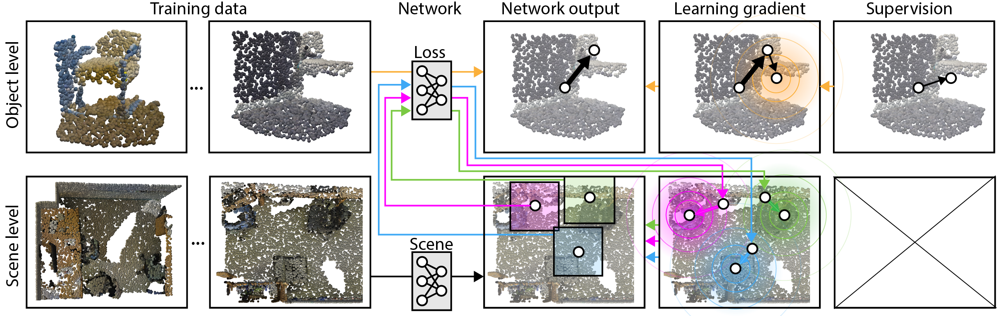

Abstract
Massive semantic labeling is readily available for 2D images, but much harder to achieve for 3D scenes. Objects in 3D repositories like ShapeNet are labeled, but regrettably only in isolation, so without context. 3D scenes can be acquired by range scanners on city-level scale, but much fewer with semantic labels. Addressing this disparity, we introduce a new optimization procedure, which allows training for 3D detection with raw 3D scans while using as little as 5% of the object labels and still achieve comparable performance. Our optimization uses two networks. A scene network maps an entire 3D scene to a set of 3D object centers. As we assume the scene not to be labeled by centers, no classic loss, such as chamfer can be used to train it. Instead, we use another network to emulate the loss. This loss network is trained on a small labeled subset and maps a non-centered 3D object in the presence of distractions to its own center. This function is very similar - and hence can be used instead of - the gradient the supervised loss would have. Our evaluation documents competitive fidelity at a much lower level of supervision, respectively higher quality at comparable supervision.
Video
Contact.
- Dept. Computer Science,
- 66-72 Gower Street,
- University College London,
- London,
- WC1E 6EA